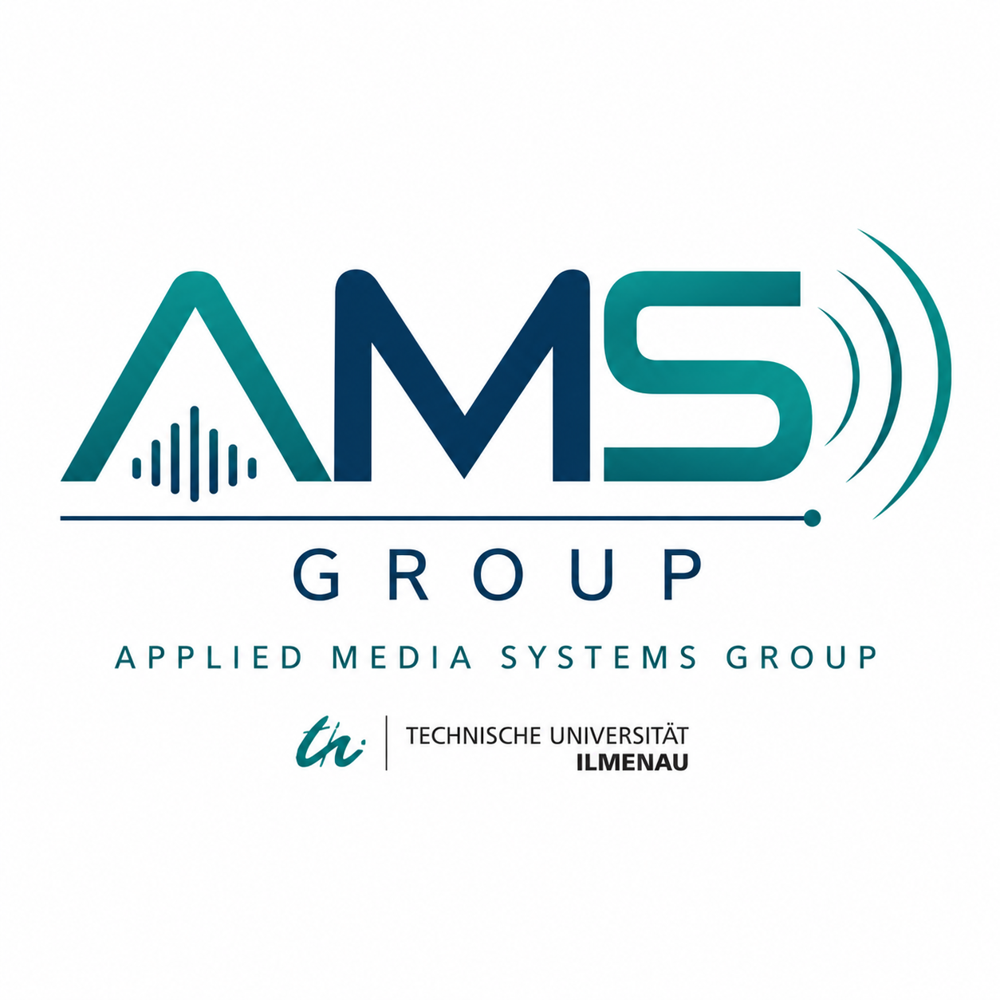

AMS Group · OnboardingNeeded for most university systems. The group's lecture chatbots work without it.
Open Timetable for your schedule, and the exam-plan guide for dates and rules.
Technologische Grundlagen, geschichtliche Hintergründe und Arbeitsabläufe der Produktion; Umsetzung in Python, OpenGL und GLUT bis hin zu eigener 3D-Software.
Geschichte der Fernsehtechnik, Psycho-Optik, analoge und digitale Fernsehsysteme, Übertragungs- und Modulationsverfahren.
Machine learning applied to audio: source separation, noise/keyword recognition, and learned filter-bank decomposition into "sound atoms".
Entwickeln einer Multimedia Web App mit Python, JavaScript & HTML5.
Gustav-Kirchhoff-Straße 1
98693 Ilmenau
Prof. Schuller — Raum K 3014
Sushmita — Raum K 3013